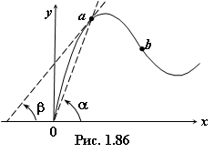

Все нелинейные элементы условно
разделяют на два класса: нелинейные двухполюсники и нелинейные четырёхполюсники. Нелинейную вольт-амперную u = ƒ(i) характеристику резистивного двухполюсника, как и вебер-амперную Ψ = ƒ(i) индуктивного и кулон-вольтную q = ƒ(u) характеристику ёмкостного элемента-двухполюсника, определяют экспериментально и представляют в виде графика, таблицы или аналитического выражения. Далее эти зависимости будем представлять в виде у = ƒ(х).
При описании характеристик нелинейных
элементов используют статические и дифференциальные параметры.
С т а т и ч е с к и й параметр (Rст = u / i, либо Lст = Ψ / i, либо Cст = q / u) определяют по статической характеристике у = ƒ(х) элемента как отношение ординаты выбранной точки характеристики к её абсциссе. Статический параметр пропорционален тангенсу угла α наклона прямой, проведённой через начало координат и рабочую точку а (рис. 1.86).
С т а т и ч е с к и й параметр (Rст = u / i, либо Lст = Ψ / i, либо Cст = q / u) определяют по статической характеристике у = ƒ(х) элемента как отношение ординаты выбранной точки характеристики к её абсциссе. Статический параметр пропорционален тангенсу угла α наклона прямой, проведённой через начало координат и рабочую точку а (рис. 1.86).

Д и ф ф е р е н ц и а л ь н ы й (динамический) параметр (Rd = du / di, либо Ld = dΨ / di, либо Cd = dq / du) определяют по статической характеристике у = ƒ(х) НЭ как отношение малых приращений dy/dx. Динамический параметр пропорционален тангенсу угла β между касательной к характеристике у = ƒ(х) в рабочей точке а и осью абсцисс (см. рис. 1.86).
Для пассивных элементов статические
параметры всегда положительные, но дифференциальные Rd, Ld и Cd положительные только тогда, когда рабочая точка (например, точка а, рис. 1.86) лежит на восходящей части характеристики, и отрицательные, если рабочая точка (например, точка b) лежит на падающем участке характеристики y(x).
Различают следующие виды характеристик у = ƒ(х) (табл. 1.3): а) симметричные и несимметричные; б) монотонные и немонотонные; в) немонотонные, управляемые параметром х (характеристики типа S); г) немонотонные, управляемые параметром у (характеристики типа N); д) неуправляемые и управляемые.